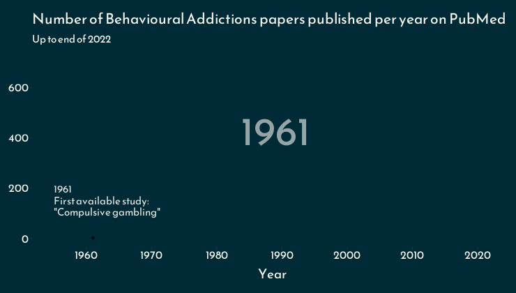

The history of behavioural addictions research (according to PubMed)
Gambling
Author
Rob Heirene
Published
August 25, 2023
Code: set-up
# Install and load the groundhog package to ensure consistency of the package versions used here:# install.packages("groundhog") # Installlibrary(groundhog) # Load# List desired packages:packages <-c('readr', # Load dataset from GitHib'RCurl', # Load dataset from GitHib'tidyverse', # Clean, organise, and visualise data'plotly', # Add interactive elements to figures'gganimate', # Make animated plots'png',# Helps render gganimate plots'gifski', # Helps render gganimate plots'rmarkdown', # Helps render gganimate plots'sysfonts', # Special fonts for figures'showtext', # Special fonts for figures'htmlwidgets') # Make plotly plots HTML format for rendering in Quarto# Load desired package with versions specific to project start date:groundhog.library(packages, "2023-08-01") # Load new font for figures/graphsfont_add_google("Poppins", "Poppins")font_add_google("Reem Kufi", "Reem Kufi")showtext_auto(enable =TRUE)
total_year_gganimate <- raw_data %>%distinct(PMID, .keep_all =TRUE) %>%filter(Year !="2023") %>%group_by(Year) %>%count() %>%ungroup() %>%ggplot(aes(Year, n)) +geom_point() +geom_line(size =1.1, color ="#289998") +geom_text(aes(x =1984, y =370, label =as.factor(Year)), hjust =0, vjust =0, alpha =0.6, col ="#F5F7F0", size =15, family ="Reem Kufi",) +scale_x_continuous(breaks =seq(1960, 2020, by =10)) +# theme_classic() +theme(plot.background =element_rect(fill ="#002B36", color =NA), # ADDING THIS NA REMOVES BORDER AROUND PLOT ON WEBSITEpanel.background =element_rect(fill ="#002B36"),text =element_text(family ="Reem Kufi", color ="#F5F7F0"),axis.text =element_text(color ="#F5F7F0", size =12),panel.grid =element_blank(),plot.margin =margin(20, 5, 20, 20),axis.title.y =element_blank(), # Adjust y-axis title positionaxis.title.x =element_text(margin =margin(t =15), size =14),plot.title =element_text(color ="#F5F7F0", size =14, margin =margin(b =15))# panel.border = element_rect(color = "#002B36") ) +labs(title ="Number of Behavioural Addictions papers published per year on PubMed", # Add headersubtitle ="Up to end of 2022",x ="Year" ) +transition_reveal(Year)# view_follow()animate(total_year_gganimate, width =700, height =380, rewind =FALSE)

Now let’s start to look publication rates for each “addiction” in our dataset.
Rob HeireneRob HeireneAbout/about.htmlAddiction Science Blog/posts.htmlPublications/publication.htmlmailto:robheirene@gmail.comhttps://github.com/rheirenehttps://scholar.google.co.uk/citations?user=2bz0qnsAAAAJ&hl=enhttps://osf.io/atwg5/https://twitter.com/RHeirenehttps://www.linkedin.com/in/robert-heirene/Copyright 2023, Rob Heirene (CC BY-SA 4.0)View source code on Github